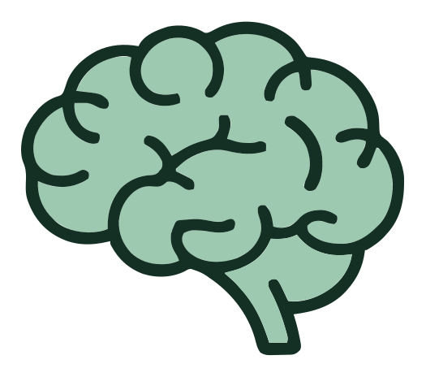
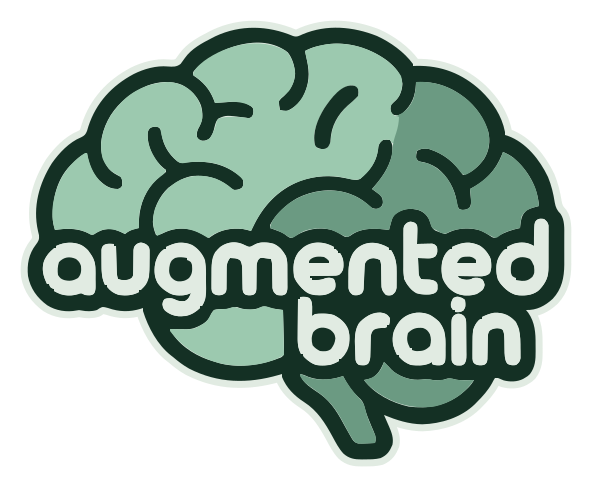
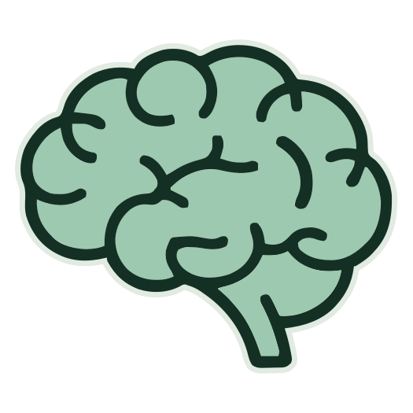
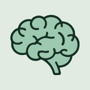

augmented brain
The logo, its icons and its palette, shown where they will live: the README on GitHub, the browser tab, a phone home screen and the card people see when the link is shared. Every asset is generated by assets/brand/build.py.
Sample texts on this page are placeholders.
On different backgrounds
The symbol is the same brain without the name. It is used where the text does not fit: icons and headers. On dark backgrounds use the -dark versions: a light border keeps the dark outline visible.

Symbol · soft
Logo-dark · inkThe README on GitHub
One header for every background: the main logo on a white card with rounded corners, so it reads on GitHub's light and dark pages.
A way of working for Claude Code: tasks, areas and rules that stick, on Linux, macOS and Windows.
A way of working for Claude Code: tasks, areas and rules that stick, on Linux, macOS and Windows.
Browser tab and phone
The 16 px icon is the hardest one: it is the one in the browser tab, so it is a simplified silhouette.

svg · 64
180 (at half size)When the link is shared
The card GitHub, Slack or LinkedIn show when someone pastes the repository link.
Four colours
Measured on the original logo. These are the CSS variables the site and the docs use.
Header typeface: Quicksand, under the SIL Open Font License. Sources and build script: assets/brand/.